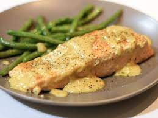

Pan-Fried Salmon in Curry Cream Sauce

very easy and delicoius salmon recipe for 2 people.
Ingredients
- ½ cup heavy whipping cream.
- 1 teaspoon mild curry powder.
- 1 teaspoon lemon juice.
- 2 pinches ground ginger.
- 2 (4 ounce) salmon fillets.
- Salt and freshly ground peper to taste.
Directions Step by Step:
- Combine cream, curry powder, lemon juice, and ginger in a skillet and bring to a boil over medium heat.
- Reduce heat to low and slide salmon into the cream.
- Cover and simmer until fish flakes easily with a fork, about 12 minutes depending on the thickness of the fillets.
- Flip 1 to 2 times while cooking.
- Season with salt and pepper.
Back to Home page